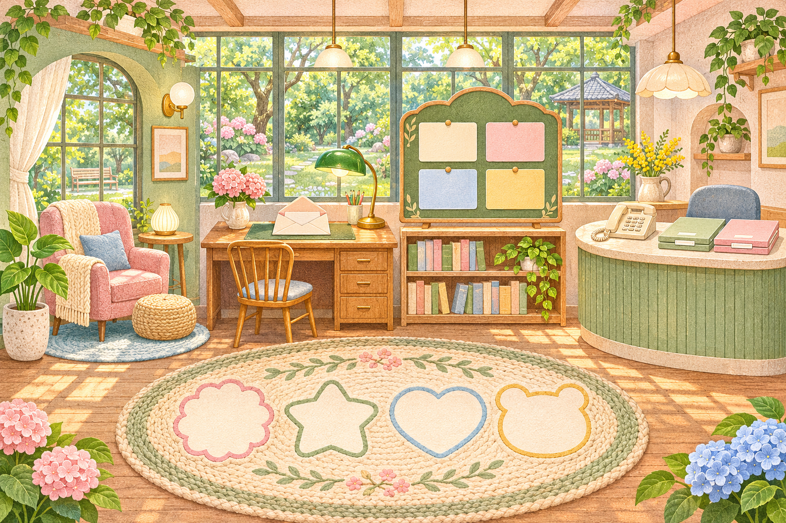

일하는 당신의 작은 놀이터
나의 산책 도장 ↓대전근로자건강센터 건강정원
잠깐 쉬고, 편지도 열고. 오늘은 나를 조금 챙겨 볼까요?

오늘도, 당신을 위한 자리를 비워 두었어요.정답을 찾기보다, 나를 돌보는 시간을 모아요.
무료 건강상담 알아보기 ↗나의 산책 도장 0 / 4
쉼편지발견약속
놀이방 너머, 우리 가까이에작은 사업장의
작은 사업장의
든든한 건강 파트너
대전근로자건강센터는 소규모 사업장 노동자의 건강관리를 돕는 전문기관입니다.
고용노동부와 한국산업안전보건공단의 지원을 바탕으로 보건관리자 선임 의무가 없는 소규모 사업장에서도 전문적인 건강상담과 예방 서비스를 만날 수 있도록 돕습니다.
공식 센터 소개 ↗50인 미만
소규모 사업장 노동자 중심
무료 지원
직업건강 상담과 예방 서비스
몸과 마음
건강상담·사후관리·직무스트레스
함께하는 일터
사업장 건강관리·안전보건교육 문의
- 운영시간
- 월–금 08:30–17:30
토·일요일 및 공휴일 휴무 - 찾아오는 곳
- 대전광역시 유성구 테크노3로 65
한신에스메카 1층 135호 - 방문 전
- 출장 등으로 상담이 제한될 수 있으니
전화로 일정을 확인해 주세요.
이 페이지에서는 온라인 예약 접수를 받지 않습니다.
예약 확정 여부는 센터와 직접 확인해 주세요.
신청에 필요한 서류를 한곳에
대전근로자건강센터 홈페이지 ↗사후관리양식 다운로드건강검진 후 상담·사후관리 관련 서류
HWP 다운로드 ↓사업장협약신청서사업장과 센터의 건강관리 협력 신청
HWP 다운로드 ↓안전보건교육신청서사업장 안전보건교육 지원 신청
HWP 다운로드 ↓공식 홈페이지에 게시된 HWP 양식입니다. 작성 후 제출 방법과 지원 가능 여부는 센터에 문의해 주세요.
편하게 물어보세요
누가 이용할 수 있나요?
대전과 인근 충청권의 50인 미만 사업장 노동자를 중심으로 직업건강 서비스를 지원합니다. 사업장 규모나 근무 형태에 따른 이용 가능 여부는 센터에 문의해 주세요.
상담 비용이 있나요?
센터의 직업건강 상담과 안전보건교육은 무료로 지원됩니다. 원하는 프로그램의 운영 여부와 일정은 전화로 확인해 주세요.
건강검진 결과지를 가져가도 되나요?
건강상담·사후관리 서비스를 문의할 수 있습니다. 결과지 등 상담에 필요한 준비물은 예약할 때 담당자에게 확인해 주세요.
체험 결과로 건강 상태를 알 수 있나요?
이 체험은 관심 있는 상담 주제를 찾는 안내입니다. 의학적 검사나 진단이 아니며 실제 건강 상태와 검진 결과는 전문가에게 상담해 주세요.